Create Vitis HLS Project
Vitis GUI should open as shown below.
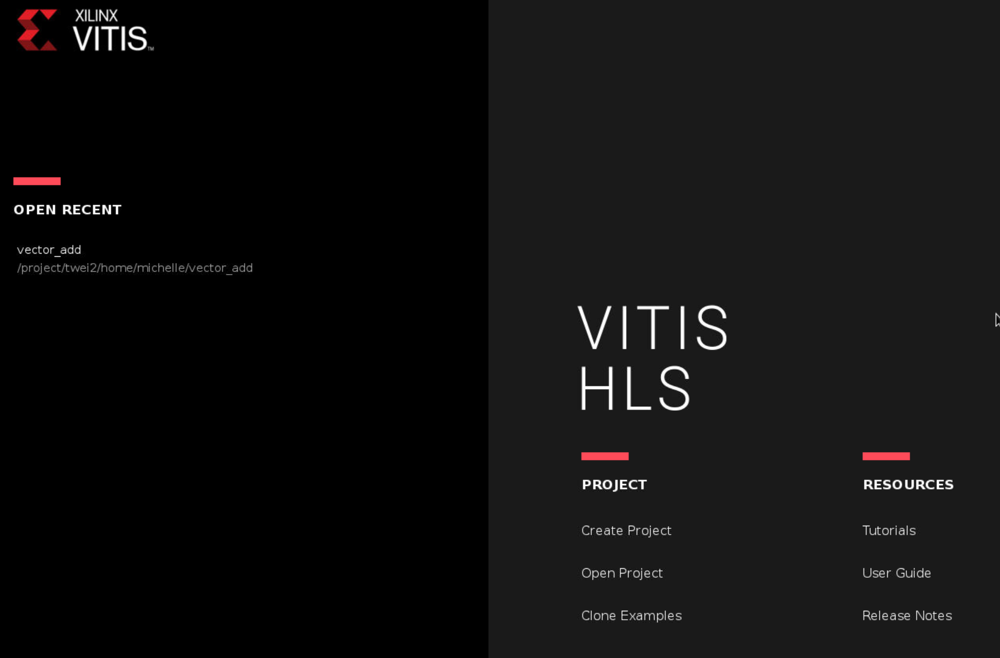
Create a new project and specify the project name vector_add.
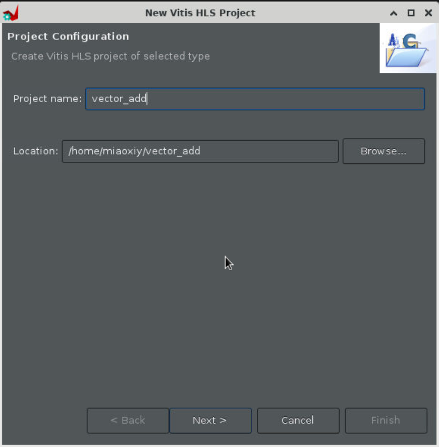
Step 2
It is not necessary to specify the top function nor the testbench now. Click on Next twice.
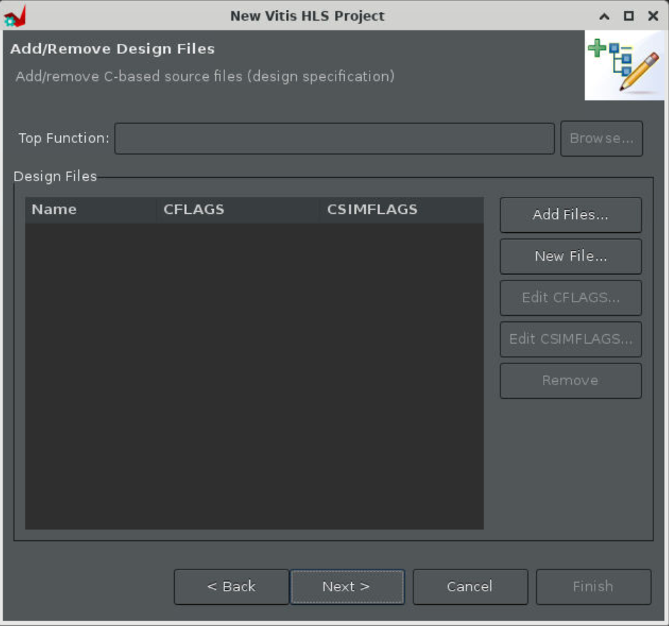
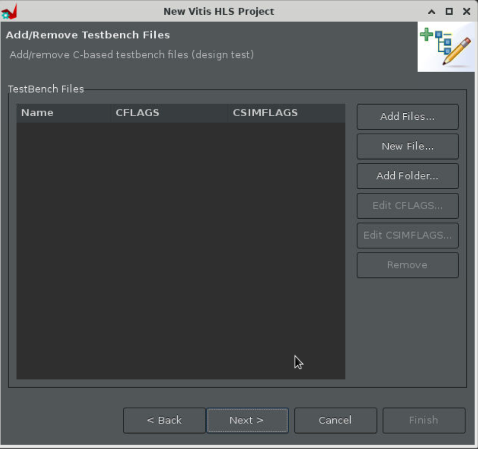
Step 3
Change part selection to Pynq-Z2 using the part number xc7z020clg400-1 as shown below. This is the FPGA board we will be using for our lab assignments.
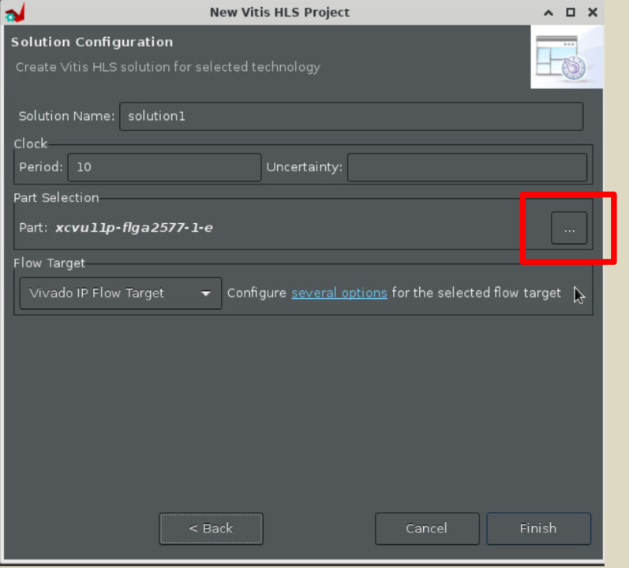
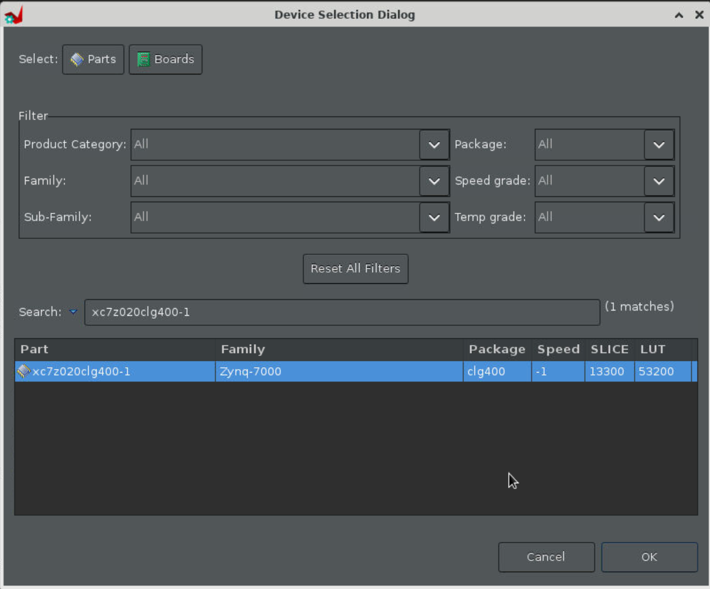
Note: Pynq-Z2 is a beginner’s board featuring Xilinx Zynq-7000 SoC supporting the Pynq (Python for Zynq) framework that makes it easier to run host applications on the board using Python language and libraries.
Step 4
No need to change the Solution Name or the Period. We will continue with 100 MHz default clock frequency. Then click “Finish”.
You should see a window like the one shown below.
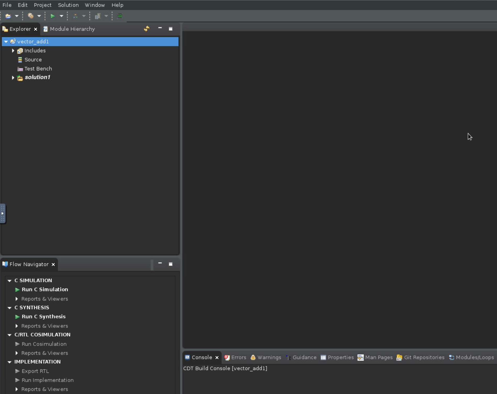
Step 5
Now, we can design our accelerator in C++ and simulate with Vitis. To do so, start by creating a new source file named top.c in your desired folder as the following:
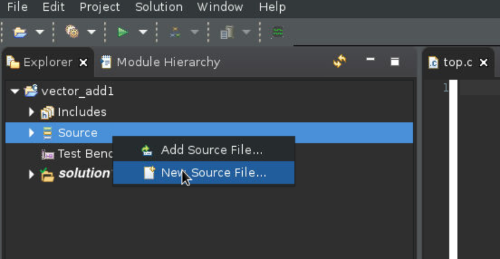
// top.c
void top(int a_r[100], int b_r[100], int sum_r[100])
{
#pragma HLS interface m_axi port=a_r depth=100 offset=slave bundle = A
#pragma HLS interface m_axi port=b_r depth=100 offset=slave bundle = B
#pragma HLS interface m_axi port=sum_r depth=100 offset=slave bundle = SUM
#pragma HLS interface s_axilite register port=return
for (int i = 0; i < 100; i++)
{
sum_r[i] = a_r[i] + b_r[i];
}
}
Step 6
Next, create a textbench named main.c as the following:
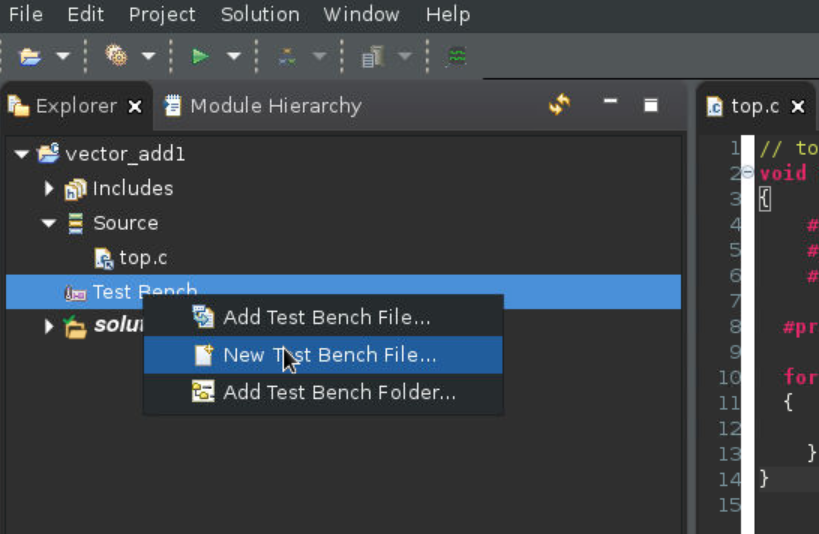
// main.c
#include <stdio.h>
void top( int a_r[100], int b_r[100], int sum_r[100]);
int main()
{
int a[100];
int b[100];
int c[100];
int c_gold[100];
// Misc
int i_trans, NUM_TRANS = 2, tmp;
FILE *fp;
// Load input data from files
fp=fopen("tb_data/inA.dat","r");
for (int i=0; i<100; i++){
fscanf(fp, "%d", &tmp);
a[i] = tmp;
}
fclose(fp);
fp=fopen("tb_data/inB.dat","r");
for (int i=0; i<100; i++){
fscanf(fp, "%d", &tmp);
b[i] = tmp;
}
fclose(fp);
// Execute the function multiple times (multiple transactions)
// Call the DUT function, i.e., your adder
for(i_trans=0; i_trans<NUM_TRANS; i_trans++){
top(a, b, c);
}
// Load expected output data from files
fp=fopen("tb_data/outC.golden.dat","r");
for (int i=0; i<100; i++){
fscanf(fp, "%d", &tmp);
c_gold[i] = tmp;
}
fclose(fp);
// verify the results
int pass = 1;
for(int j = 0; j < 100; j++)
{
if(c[j] != c_gold[j])
{
pass = 0;
}
printf("A[%d] = %d; B[%d] = %d; Sum C[%d] = %d\n", j, a[j], j, b[j], j, c[j]);
}
if(pass)
printf("Test Passed! :) \n");
else
printf("Test Failed :( \n");
return 0;
}
Create a folder named tb_data in the same location as your testbench file main.c. Inside tb_data, create three files: inA.dat (input data), inB.dat (input data), and outC.golden.dat (expected ouput data). Each file should contain 100 values in a single column. The value in each row of outC.golden.dat must be the sum of the corresponding row values in inA.dat and inB.dat. You need to figure out how to create these files and values by yourself. Then, add this folder to the Test Bench.
Note: Test bench does not get synthesized. So you are free to use any C/C++ construct for your testing purposes!
Step 7
Let’s run C simulation for our adder module.
Click Run C simulation and then click OK.
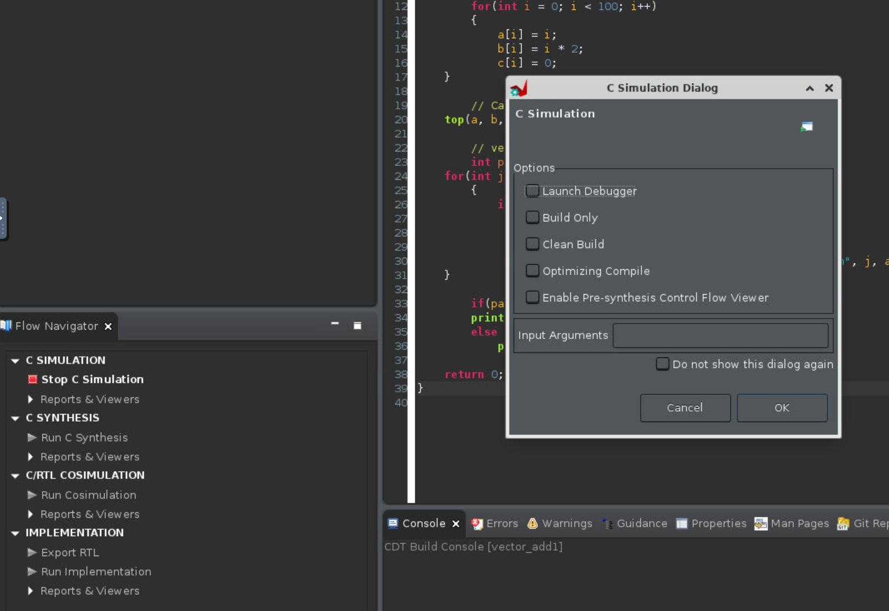
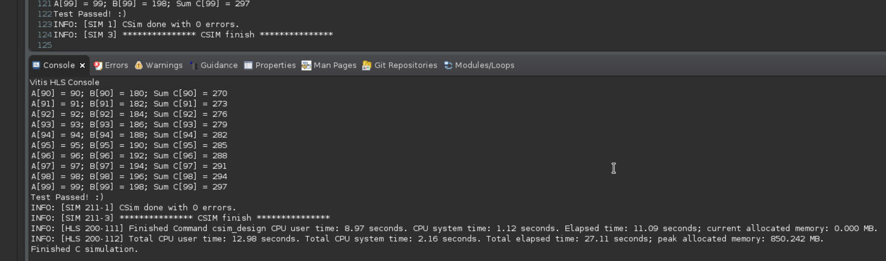
Step 8
Now that the simulation has passed, let’s run high-level synthesis and generate the RTL for our adder. Go to Project Settings > Synthesis, and specify top.c as the top function.
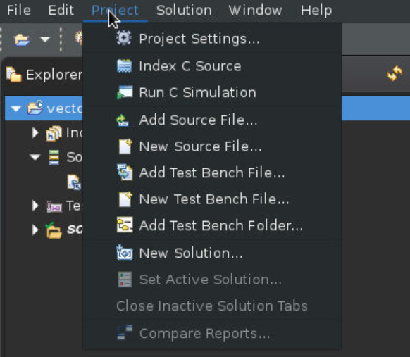
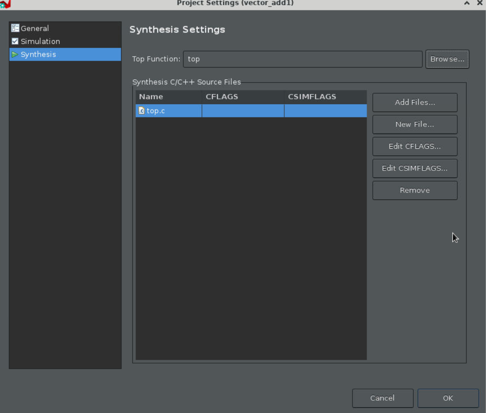
Step 9
Run synthesis
Click Run C Synthesis and set the Period to be 10, then click OK.
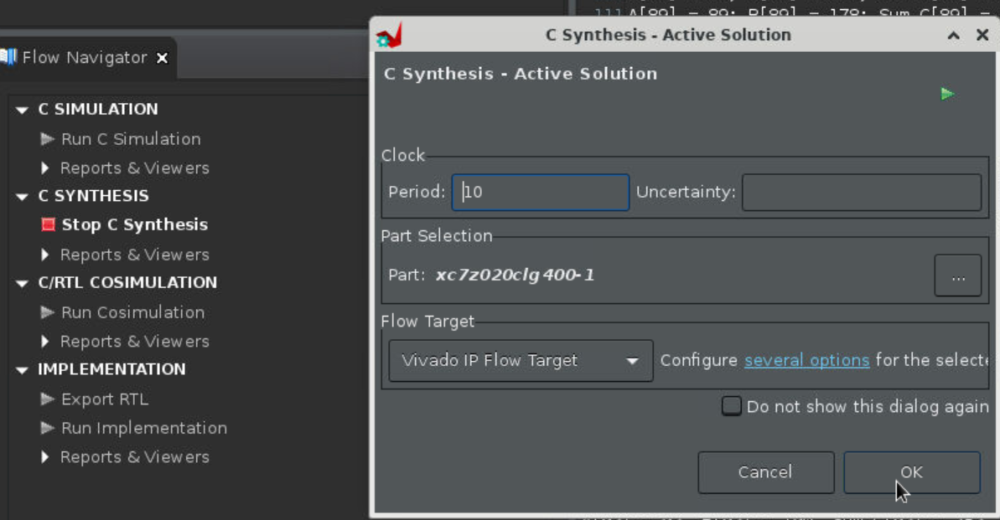
Step 10
Check the console window to know when the synthesis finishes.
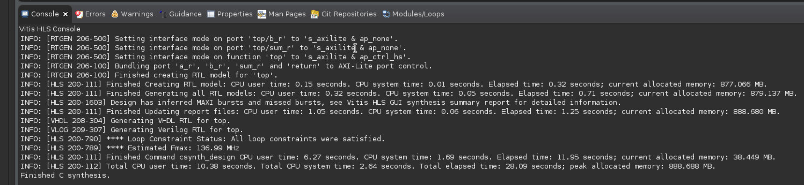
Step 11
We can now view the performance reports and resource utilisation.
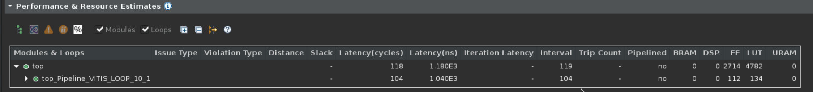
Step 12
C/RTL co-simulation can also be run at this stage. Vitis uses the same test bench main.c to test the RTL generated. This is left as an exercise. We will now export our adder “IP” for integration in Vivado.
Click Export RTL under “IMPLEMENTATION”, then click OK.
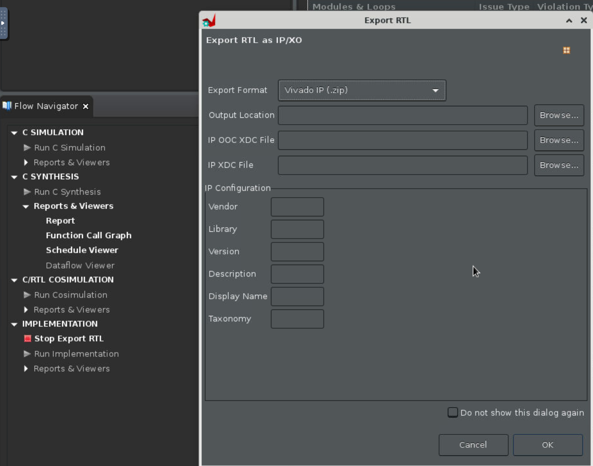
Note that the “Export Formart” should choose “Vivado IP (.zip)”.
Then you will see the Finished Export RTL/Implementation in the console window, and find the ‘export.zip’ in the ‘~/vector_add/vectoe_add/solution1/impl/export.zip’.
That’s it. We should now move to Vivado to generate the bitstream with our exported adder IP!